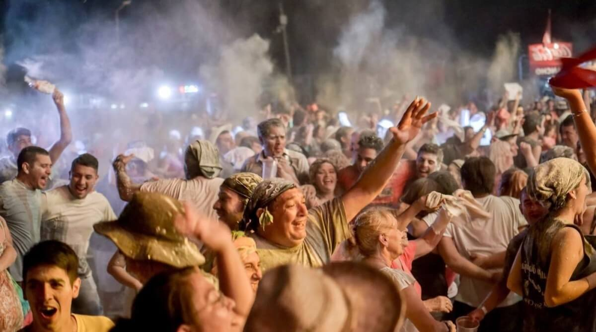
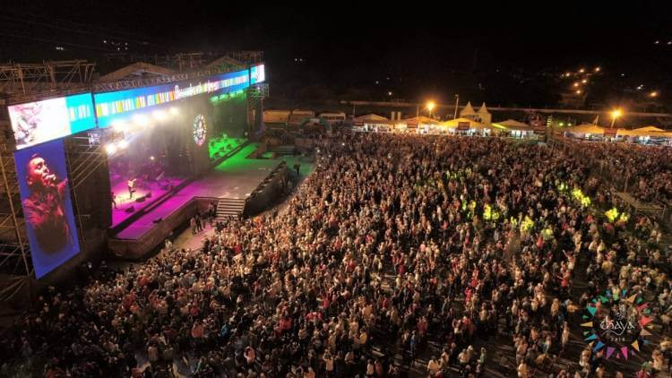
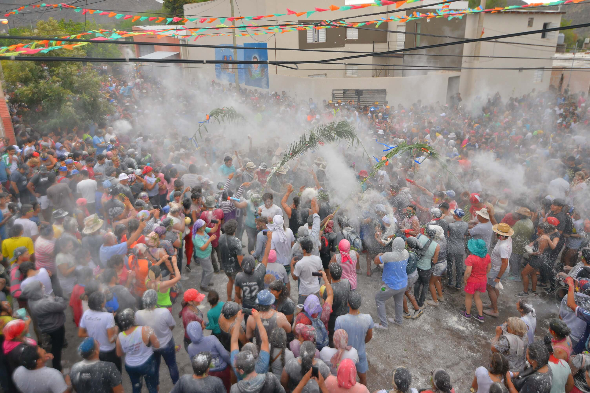
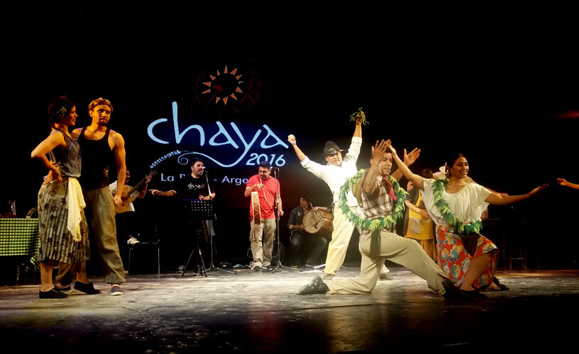

La Chaya es una celebración tradicional que tiene lugar cada año en la provincia de La Rioja, Argentina. Esta festividad colorida y llena de alegría es una muestra de la rica cultura y tradiciones de la región, y representa una de las festividades más importantes del calendario riojano.

La Chaya tiene sus raíces en las culturas indígenas ancestrales y en la fusión de tradiciones con elementos españoles y africanos. Originalmente, era una festividad que buscaba agradecer a la Pachamama (Madre Tierra) por las cosechas y pedir abundancia para el año venidero. Con el tiempo, La Chaya se convirtió en un carnaval de música, baile y alegría compartida por toda la comunidad.

La Chaya se celebra durante varios días, generalmente a fines de febrero o principios de marzo, coincidiendo con el período previo a la cuaresma cristiana. Esta festividad marca el fin del verano y la bienvenida al otoño, momento en que los frutos de la tierra han sido recogidos y es momento de celebrar y compartir.

En resumen, La Chaya es una fiesta llena de música, danza y tradiciones arraigadas en la historia de La Rioja. Es una oportunidad única para sumergirse en la cultura y el folclore de la región, y disfrutar de un carnaval auténtico y emocionante que deja una impresión duradera en el corazón de todos los que lo experimentan. ¡Ven y vive La Chaya en La Rioja!